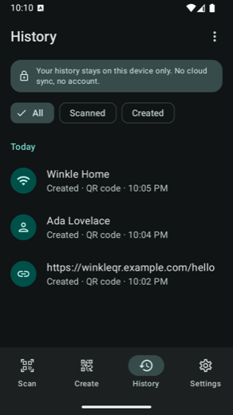

Scan and create QR codes and barcodes on Android. Free, no ads, no account — and with no internet permission at all, so it isn't able to send your scans anywhere.
Most apps ask you to trust that they won't misuse what they see. Winkle QR doesn't hold the
INTERNET permission, so Android itself refuses to let it open a network connection. A QR code can
contain your Wi-Fi password, your address book entry, a payment link. This app reads it on your phone and
nowhere else.
Everything happens on your phone, including the clever parts.
QR codes and the usual barcodes (EAN, UPC, Code 128, Code 39), with flashlight, pinch to zoom, and a highlight on the code it found.
Someone sent you a code in a screenshot? Pick the photo and it reads it — even if you've refused camera access.
Links, Wi-Fi networks, contacts, phone numbers, messages, emails, products. Each gets the right action, and links show the real domain so a fake one stands out.
Colours, gradients, dot shapes, a logo in the middle, frames. Any colour you like, not just presets.
13 designs for menus, payments, guest Wi-Fi, weddings, events, socials and shops. Export as an image or a print-sharp PDF in A4, Letter or A5.
Every design is scanned back by the app before you save it. If a colour choice would break it, you're told straight away.
Past scans and codes live on the phone only, and are left out of cloud backups. Delete one or clear the lot.
Two panes when a Fold is open, camera above the crease on a half-folded Flip, and nothing lost when you fold or unfold.
Codes and posters come out clean. No logo of ours stamped on your work, no "upgrade to remove".
Screens from the app: designing a code, reading a link, joining Wi-Fi, history, settings.




Original designs, free, with no watermark and no subscription. Your code goes in the middle; the text is yours to edit.


Anyone can say "we don't track you". Here's what stands behind it.